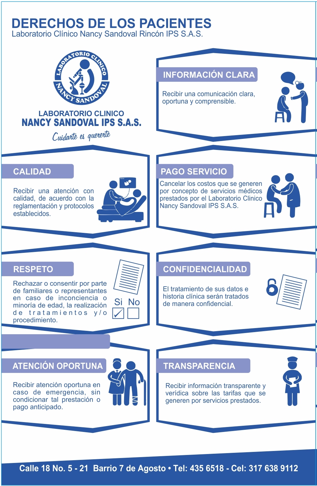
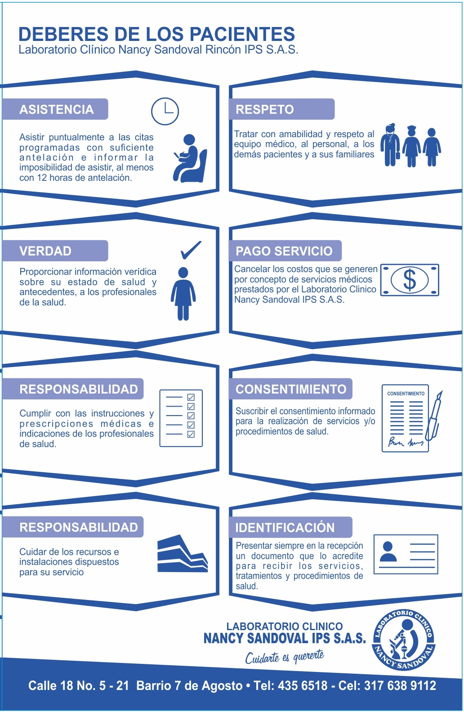

Toggle navigation
Principal
Laboratorio Clínico
Nancy Sandoval Ips S.A.S
Bienvenido al Laboratorio Clínico Nancy Sandoval.
Institucional
Sedes y horario de toma de muestras
Exámenes
Notas
Contacto

